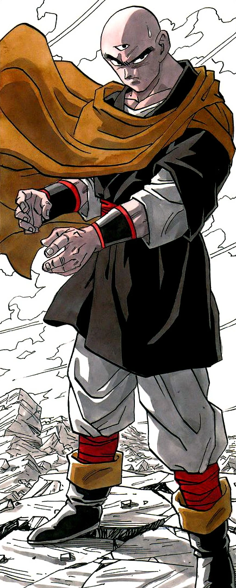

Tien Shinhan (天テン津シン飯ハン or 天てん津しん飯はん Tenshinhan) is a disciplined, reclusive, and heavily devoted martial artist, and one of the strongest Earthlings within the Dragon Ball universe.
He also possesses a few non-human traits due to being descended from the alien Triclops race.
He was originally a student of the Crane School who desired revenge against Goku for defeating his mentor, Mercenary Tao, but realized he was on the wrong side with the help of Master Roshi.
He battles alongside the other Z Fighters against major threats to the Earth, often courageously engaging enemies far more powerful than himself.
However, he spends most of his time training with his lifelong best friend, Chiaotzu.
Tien Shinhan was originally a cold-hearted and ruthless warrior, never caring for anyone's life with the exception of his fellow students and mentors.
This brutality can be plainly seen when he crushes Yamcha's and another fighter's leg during the 22nd World Martial Arts Tournament.
However, he finds a lifelong best friend in Chiaotzu, for whom he cares deeply, and vice-versa.
He highly idolized his mentor Mercenary Tao and desired to be a famous assassin like him.
Due to Master Roshi's and Goku's influence, he changed his demeanor and became one of the most respected warriors on the planet.
Before he transitioned to the good side, he planned to kill Goku during the World Martial Arts Tournament in revenge for Tao's apparent death at Goku's hands.
However, this mentality soon changes with the realization that he disagrees with the brutal methods employed by his masters, Shen and Mercenary Tao.
He goes off on his own to train and soon becomes a powerful ally to Goku and the others.
His personality transitions from one of a brutal killer to that of an honorable warrior who cares deeply for those he strives to protect.
He occasionally tries to repent for his former brutality, but eventually rises above his horrid memories and looks toward to the future.
He is very stern and serious, not cracking jokes and goofing around as often as most of the other Z-Fighters.
During Dragon Ball Z, he is seen striving to become a powerful warrior and still hopes to surpass Goku one day.
Tien despises staying on the sidelines whilst his more powerful friends and allies fight opponents far stronger than he and will always attempt to assist even if he knows that it will most likely lead to his death.
Despite making new friends, Tien stays reclusive and is not very socially active, spending most of his time training to become a better fighter, although he still goes to Bulma's parties and interacts well with others there.
Although he lets go of his grudge against Goku and the others, he is still capable of holding animosity towards people he considers unrepentant.
One known person is Vegeta, whom Tien blames for almost destroying the Earth, and continued to view him as an enemy when he began allying with the Z-Fighters, (despite later knowing that the Saiyan prince himself was a slave of Frieza).
However, he forgives Vegeta after he proves crucial in the defeat of Kid Buu and is later seen being civil with him.
Tien valiantly fights and defeats a Saibaman when the Saiyans arrive, and does battle with Nappa, during which Chiaotzu sacrifices himself in vain, causing Tien to put all his effort into one final attack, which fails.
Tien dies a hero's death but is revived later by Porunga.
When the conflict with the Androids comes into full swing, Tien puts his life on the line numerous times when assisting his friends against the mechanical demons, most notably when using his life-force to hold Cell at bay, nearly sacrificing his own life to allow Android 16 and Android 18 to escape, thus saving the Earth from certain destruction.
When Super Buu threatens Earth's existence seven years later, Tien arrives just in time to save Gohan from a certain death.
In Dragon Ball Super, Tien's personality remains mostly the same, and is brave enough to fight against the God of Destruction Beerus, the Frieza Force, and Yurin's spell-empowered minions (including Master Roshi).
Since opening his own dojo in the Universe Survival Saga, he is shown to be a serious and strict teacher, but at the same time, patiently looks forward to his student's development.
During the Tournament of Power, Tien's brave and noble actions saved his entire team from the sniper duo of Universe 2.
Impressed by his bravery and noble will, Beerus uncharacteristically praises Tien's fighting spirit following his elimination telling him he has nothing to be ashamed of, having earned the God of Destruction's respect.
He is not very technologically savvy or current with the times, so much so that he does not even have a cellphone, which proved a hindrance during the Galactic Patrol Prisoner Saga, when the Z Fighters had no way to contact Tien to inform him of the growing problems.
It is later revealed in the aforementioned saga that Tien is not very good at all at insulting people, as he was struggling to find the words to hurt Bikkura Quoitur's feelings.
Another reason as for why he was unable to insult Bikkura, could be that Tien is bad at thinking outside the box.
Because the opponent was a Metalman, calling him things like "half-ton fatty" would not mean anything because they weigh over 1000 tons, making the problem that he is not creative enough to insult someone so non-human.